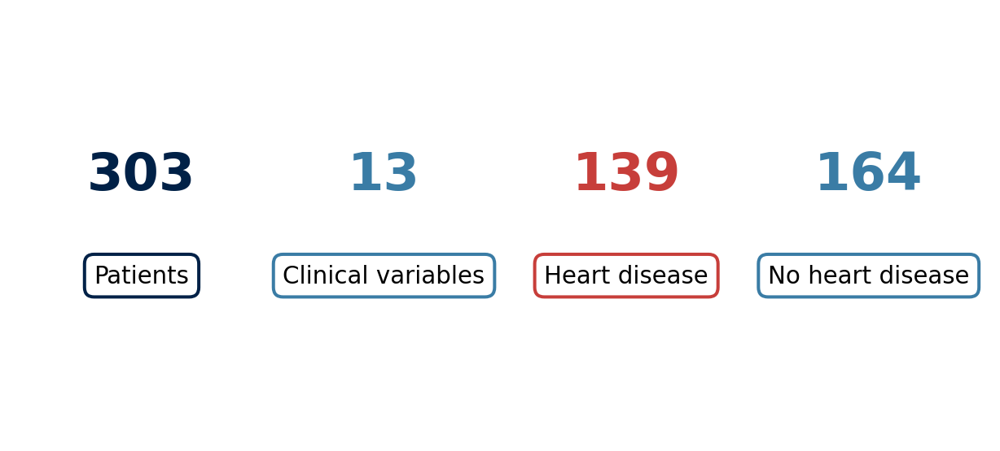
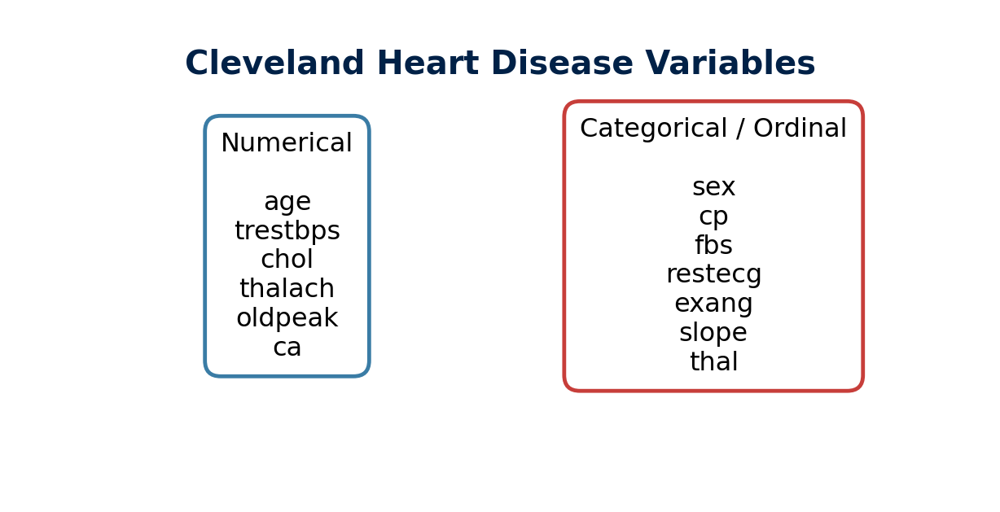
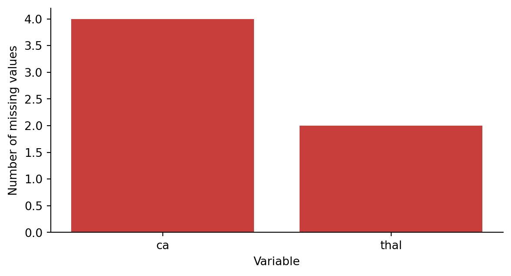
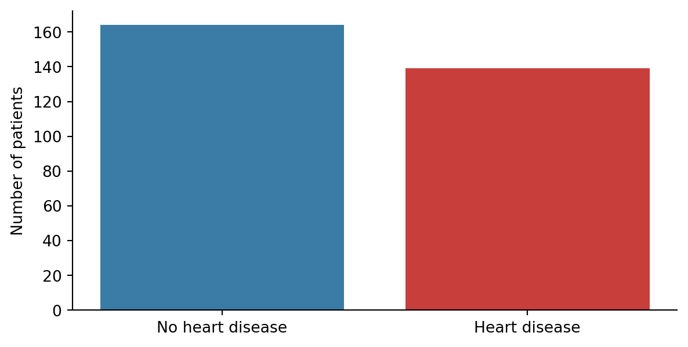
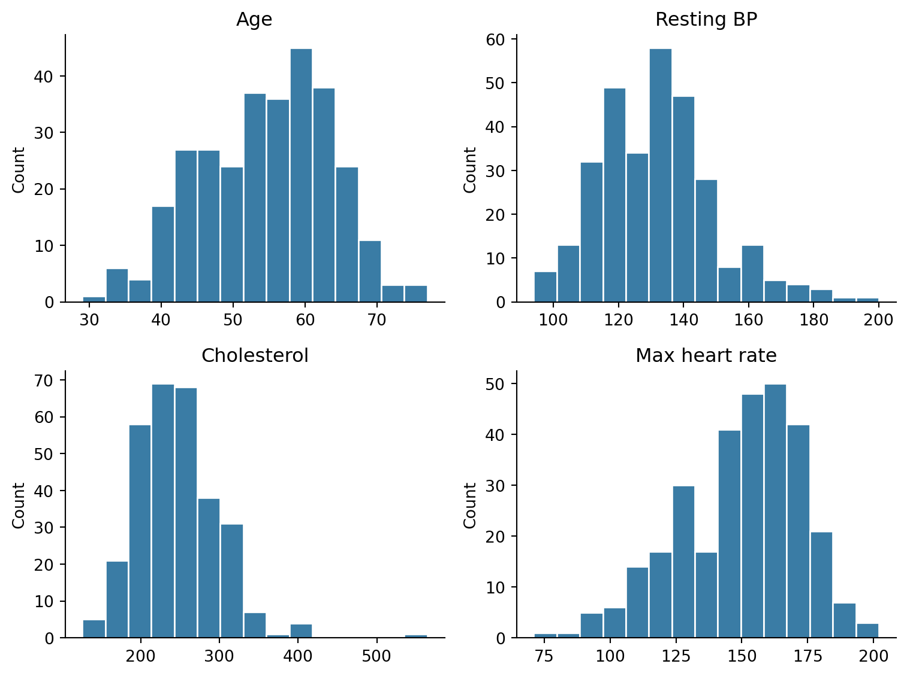
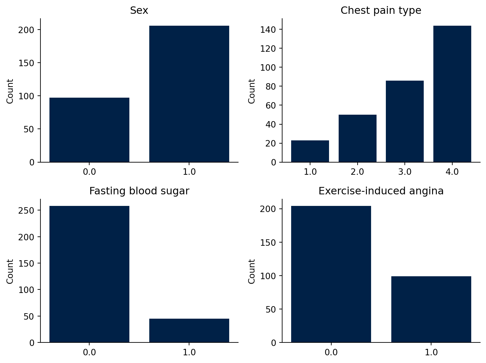

The Dataset
The processed Cleveland Heart Disease dataset
NoteClinical Question
What data do we have, what do the variables mean, and what can we learn before applying formal statistical methods?
The Cleveland Heart Disease Dataset
In this module, we will use the processed Cleveland Heart Disease dataset from the UCI Machine Learning Repository.
The dataset contains patient-level clinical measurements collected from individuals investigated for heart disease. We will use it as a running example throughout the module.
The original UCI Heart Disease database contains many more attributes, but most published studies use a smaller subset of 14 variables. In this teaching module, we will focus on the processed Cleveland dataset because it is the most commonly used version.
Loading the Dataset in Python
The dataset does not include column names in the raw file, so we manually assign them when loading the data.
import pandas as pd
import numpy as np
url = "https://archive.ics.uci.edu/ml/machine-learning-databases/heart-disease/processed.cleveland.data"
columns = [
"age", "sex", "cp", "trestbps", "chol", "fbs", "restecg",
"thalach", "exang", "oldpeak", "slope", "ca", "thal", "num"
]
df = pd.read_csv(url, header=None, names=columns, na_values="?")
df.head()| age | sex | cp | trestbps | chol | fbs | restecg | thalach | exang | oldpeak | slope | ca | thal | num | |
|---|---|---|---|---|---|---|---|---|---|---|---|---|---|---|
| 0 | 63.0 | 1.0 | 1.0 | 145.0 | 233.0 | 1.0 | 2.0 | 150.0 | 0.0 | 2.3 | 3.0 | 0.0 | 6.0 | 0 |
| 1 | 67.0 | 1.0 | 4.0 | 160.0 | 286.0 | 0.0 | 2.0 | 108.0 | 1.0 | 1.5 | 2.0 | 3.0 | 3.0 | 2 |
| 2 | 67.0 | 1.0 | 4.0 | 120.0 | 229.0 | 0.0 | 2.0 | 129.0 | 1.0 | 2.6 | 2.0 | 2.0 | 7.0 | 1 |
| 3 | 37.0 | 1.0 | 3.0 | 130.0 | 250.0 | 0.0 | 0.0 | 187.0 | 0.0 | 3.5 | 3.0 | 0.0 | 3.0 | 0 |
| 4 | 41.0 | 0.0 | 2.0 | 130.0 | 204.0 | 0.0 | 2.0 | 172.0 | 0.0 | 1.4 | 1.0 | 0.0 | 3.0 | 0 |
The argument na_values="?" tells Python that question marks in the dataset should be treated as missing values.
TipKey Idea
Before analysing any biomedical dataset, we should first understand how it is structured, what each variable represents, and whether any values are missing.
Understanding the Variables
The processed Cleveland dataset contains 13 clinical variables and one outcome variable.
| Variable | Description | Type |
|---|---|---|
age |
Age in years | Numerical |
sex |
Biological sex | Categorical |
cp |
Chest pain type | Categorical |
trestbps |
Resting blood pressure on admission | Numerical |
chol |
Serum cholesterol | Numerical |
fbs |
Fasting blood sugar > 120 mg/dl | Categorical |
restecg |
Resting ECG result | Categorical |
thalach |
Maximum heart rate achieved | Numerical |
exang |
Exercise-induced angina | Categorical |
oldpeak |
ST depression induced by exercise | Numerical |
slope |
Slope of peak exercise ST segment | Categorical/ordinal |
ca |
Number of major vessels coloured by fluoroscopy | Numerical/discrete |
thal |
Thalassemia test result | Categorical |
num |
Heart disease diagnosis | Outcome |
Types of Data
A key step in biostatistics is recognising what kind of data each variable represents.
Numerical variables can be summarised using means, medians, standard deviations, and histograms. Categorical variables are usually summarised using counts, percentages, and bar charts.

ImportantWhy this matters
The type of variable determines the appropriate summary statistic, visualisation, and statistical test.
Creating a Binary Outcome
The original outcome variable is num.
In the raw dataset:
0means no heart disease,1,2,3, and4indicate presence of heart disease.
For this module, we will use a binary outcome:
df["heart_disease"] = np.where(
df["num"] == 0,
"No heart disease",
"Heart disease"
)
df[["num", "heart_disease"]].head()| num | heart_disease | |
|---|---|---|
| 0 | 0 | No heart disease |
| 1 | 2 | Heart disease |
| 2 | 1 | Heart disease |
| 3 | 0 | No heart disease |
| 4 | 0 | No heart disease |
This simplifies the clinical question to:
Does this patient have evidence of heart disease or not?
Missing Values
Real biomedical datasets are rarely perfect. Some values may be missing because a measurement was not taken, not recorded, or not available.
df.isna().sum()age 0
sex 0
cp 0
trestbps 0
chol 0
fbs 0
restecg 0
thalach 0
exang 0
oldpeak 0
slope 0
ca 4
thal 2
num 0
heart_disease 0
dtype: int64
WarningImportant
Missing values should never be ignored without thought. They can affect summary statistics, visualisations, hypothesis tests, and regression models.
Outcome Distribution
Before comparing variables between groups, we should inspect how many patients belong to each outcome group.
df["heart_disease"].value_counts()heart_disease
No heart disease 164
Heart disease 139
Name: count, dtype: int64
The dataset contains both patients with and without heart disease, which allows us to compare the clinical measurements between these two groups.
First Look at Numerical Variables
Let us inspect several numerical variables.
df[["age", "trestbps", "chol", "thalach", "oldpeak"]].describe()| age | trestbps | chol | thalach | oldpeak | |
|---|---|---|---|---|---|
| count | 303.000000 | 303.000000 | 303.000000 | 303.000000 | 303.000000 |
| mean | 54.438944 | 131.689769 | 246.693069 | 149.607261 | 1.039604 |
| std | 9.038662 | 17.599748 | 51.776918 | 22.875003 | 1.161075 |
| min | 29.000000 | 94.000000 | 126.000000 | 71.000000 | 0.000000 |
| 25% | 48.000000 | 120.000000 | 211.000000 | 133.500000 | 0.000000 |
| 50% | 56.000000 | 130.000000 | 241.000000 | 153.000000 | 0.800000 |
| 75% | 61.000000 | 140.000000 | 275.000000 | 166.000000 | 1.600000 |
| max | 77.000000 | 200.000000 | 564.000000 | 202.000000 | 6.200000 |

These plots are not formal statistical tests. They are exploratory visualisations.
They help us ask better questions, such as:
- What is the age range of the cohort?
- Are cholesterol values symmetric or skewed?
- Does maximum heart rate vary widely between patients?
- Are there possible outliers?
First Look at Categorical Variables
Categorical variables describe groups or classes rather than continuous measurements.
df[["sex", "cp", "fbs", "restecg", "exang"]].head()| sex | cp | fbs | restecg | exang | |
|---|---|---|---|---|---|
| 0 | 1.0 | 1.0 | 1.0 | 2.0 | 0.0 |
| 1 | 1.0 | 4.0 | 0.0 | 2.0 | 1.0 |
| 2 | 1.0 | 4.0 | 0.0 | 2.0 | 1.0 |
| 3 | 1.0 | 3.0 | 0.0 | 0.0 | 0.0 |
| 4 | 0.0 | 2.0 | 0.0 | 2.0 | 0.0 |

These plots help us understand whether categories are balanced or dominated by particular values.
For example, if one category is very rare, it may be difficult to draw strong statistical conclusions about that group.
Try It Yourself
TipTry it yourself
Using the dataframe df, answer the following questions:
- How many patients are older than 60?
- What is the median cholesterol level?
- Which variable has missing values?
- How many patients have exercise-induced angina?
Suggested Python commands:
(df["age"] > 60).sum()
df["chol"].median()
df.isna().sum()
df["exang"].value_counts()exang
0.0 204
1.0 99
Name: count, dtype: int64Key Takeaways
ImportantKey Takeaways
- We will use the processed Cleveland Heart Disease dataset throughout the module.
- The dataset contains 303 patients, 13 clinical variables, and one outcome variable.
- Variables can be numerical, categorical, or ordinal.
- The outcome variable can be converted into heart disease versus no heart disease.
- Missing values must be identified before analysis.
- Exploratory visualisation is the first step before formal statistical testing.